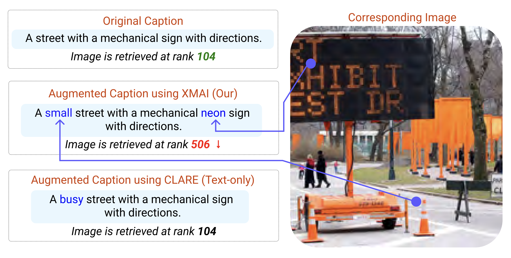

Cross-Modal Dilutions and Insertions
Gaurav Verma and Srijan Kumar
Georgia Institute of Technology
Summary (tl;dr)On a multimodal classification task – i.e., given an image and a textual description, GPT-4V's job is to predict if the correct classification label, ... Lastly, ... Continue reading for more details! Introduction and Takeaways
Figure 1: Examples of cross-modal dilution and cross-modal insertion. Takeaways: ...
What kind of cross-modal dilutions confuse multimodal LLMs? ...
...
|
|
Data: ... Prompt: ...
...
Resources: ... GitHub repository. Please feel free to reach out to us if you have any questions or comments. |
|  |
Cross-Modal Attribute Insertions for Assessing the Robustness of Vision-and-Language Learning Shivaen Ramshetty*, Gaurav Verma*, Srijan Kumar In Proceedings of the 61st Annual Meeting of the Association for Computational Linguistics (ACL 2023). code: https://github.com/claws-lab/multimodal-robustness-xmai arXiv: https://arxiv.org/abs/2306.11065 |
 |
Robustness of Fusion-based Multimodal Classifiers to Cross-Modal Content Dilutions Gaurav Verma, Vishwa Vinay, Ryan A. Rossi, Srijan Kumar In Proceedings of the 2022 Conference on Empirical Methods in Natural Language Processing (EMNLP 2022). webpage: https://claws-lab.github.io/multimodal-robustness/ code: https://github.com/claws-lab/multimodal-robustness arXiv: https://arxiv.org/abs/2211.02646 |
|
|